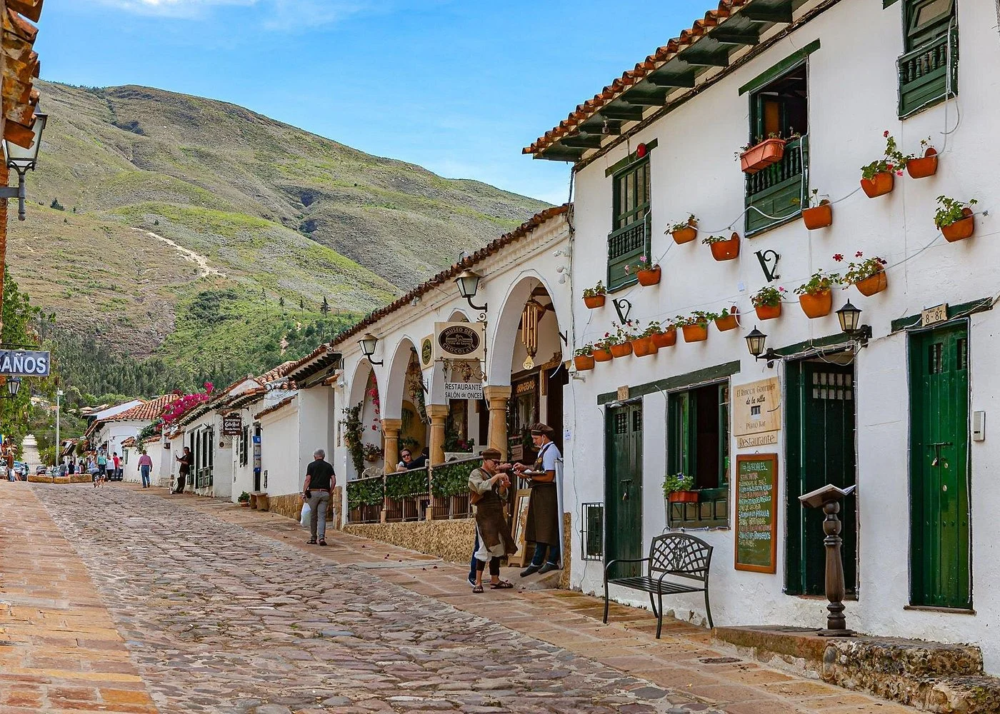

Descubre Boyacá
Boyacá es un destino turístico lleno de historia, cultura y naturaleza. Reconocido por su papel en la independencia de Colombia, cuenta con pueblos coloniales como Villa de Leyva, Monguí y Ráquira, así como paisajes únicos en el páramo de Ocetá y la Laguna de Tota.
En A&G TOURS ofrecemos transporte turístico y empresarial para recorrer Boyacá con comodidad y seguridad. Realizamos traslados a festivales tradicionales, rutas artesanales y planes ecológicos, ideales para grupos familiares, estudiantes y empresas.
Nuestro objetivo es que disfrutes lo mejor de Boyacá con puntualidad y profesionalismo, garantizando experiencias de turismo cultural y natural en el centro de Colombia.
Villa de Leyva
Villa de Leyva es uno de los pueblos coloniales más emblemáticos de Colombia. Sus calles empedradas, casas blancas y la imponente Plaza Mayor la convierten en un destino turístico que transporta a los visitantes al pasado histórico del país.
Pozos Azules
Los Pozos Azules son formaciones naturales ubicadas a las afueras de Villa de Leyva. Sus aguas turquesa y el paisaje semidesértico que los rodea ofrecen un contraste único, siendo uno de los lugares más fotografiados y visitados de Boyacá.
¡Contáctanos!